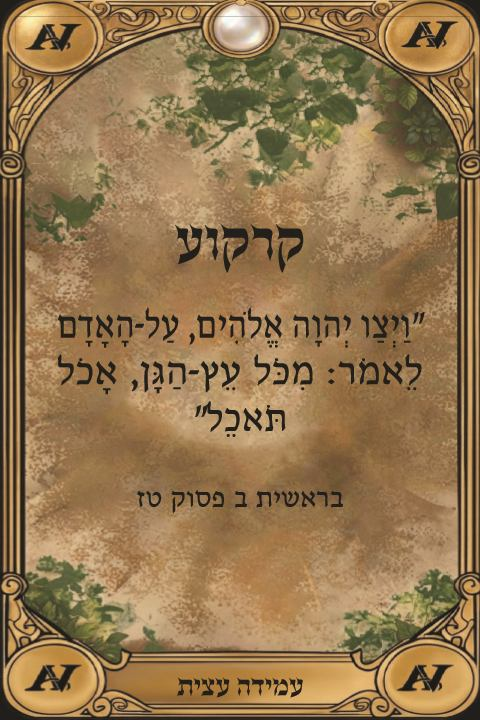

36/72אלמנט אדמה
קרקוע
וַיְצַו יְהוָה אֱלֹהִים עַל־הָאָדָם לֵאמֹר מִכֹּל עֵץ־הַגָּן אָכֹל תֹּאכֵלבראשית ב, ט"ז
משמעות הקלף
התבוננות על הפסוק כי האדם הוא "עץ השדה".

וַיְצַו יְהוָה אֱלֹהִים עַל־הָאָדָם לֵאמֹר מִכֹּל עֵץ־הַגָּן אָכֹל תֹּאכֵלבראשית ב, ט"ז
התבוננות על הפסוק כי האדם הוא "עץ השדה".
חפיסת באבא בהשראת שלושת הפרקים הראשונים בספר בראשית: קלף, פסוק ופירוש לכל מצב, לעבודה אישית, זוגית או טיפולית.